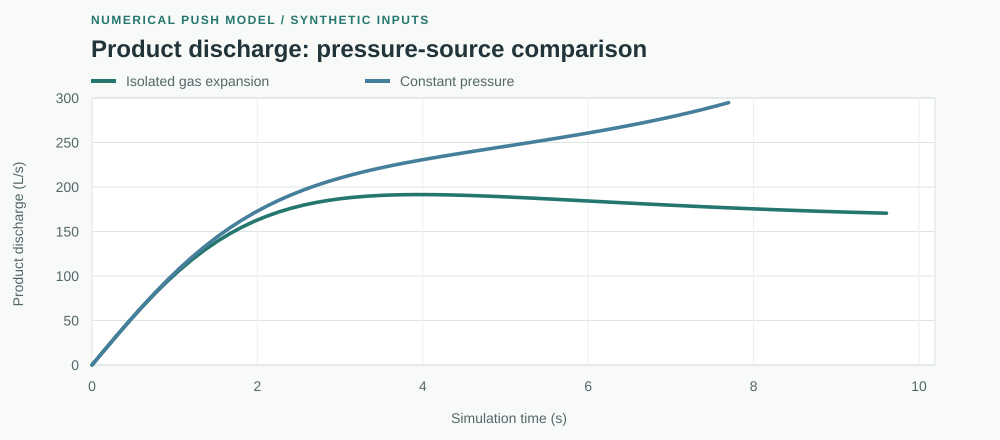
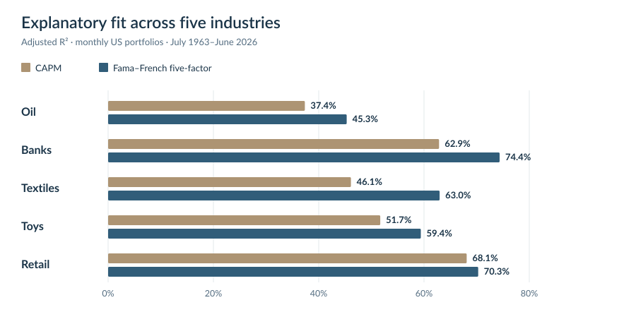
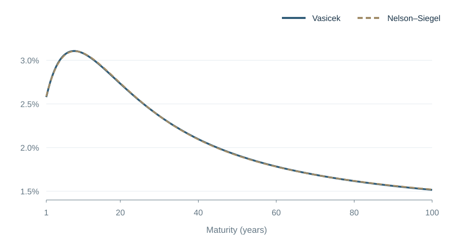
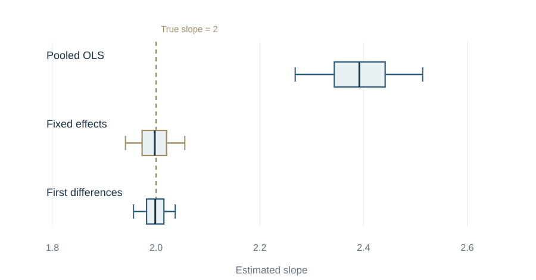

Mathematics · Quantitative Finance
Kelvin Schouten
I like starting with a question and following it until I understand why the answer works. That has led me from modelling changing flows in industrial pipelines to studying how memory affects an oscillator, and more recently to testing what financial factor models actually explain. I enjoy moving between the mathematics, Python calculations and the assumptions behind a result.
Selected work
Industrial research · Mathematical modelling
Two-phase flow in industrial pipelines
During a six-month project, I adapted published models to industrial operating conditions, studied uncertainty with Monte Carlo simulations and compared predictions with measurements.
Synthetic reproduction shown · No company data

MSc group project · Empirical finance
Testing financial factor models
Our group compared CAPM and Fama–French models using industry portfolio returns. We examined model fit, pricing errors, robust inference and moment conditions.
Historical data · In-sample results

MSc numerical study · Fixed income
From Yield Curves to Bond Prices
I fitted the Vasicek interest-rate model to Dutch government bond yields, simulated short-rate paths and priced bond options. Comparing the fit with Nelson–Siegel helped me distinguish describing a yield curve from building a model for pricing.
DNB yield data · Risk-neutral valuation

Independent research note · Econometrics
What do panel estimators recover?
I used Monte Carlo simulations to compare pooled OLS, fixed effects and first differences in panel data with unobserved heterogeneity and persistent errors. The experiments made it easier to see when a precise-looking estimate can still be biased.
Simulated data · 1,000 repetitions

Bachelor's thesis · Utrecht University
The Fractional Harmonic Oscillator
I studied how fractional-order derivatives affect oscillations, using Laplace transforms, Mittag-Leffler functions and numerical calculations.